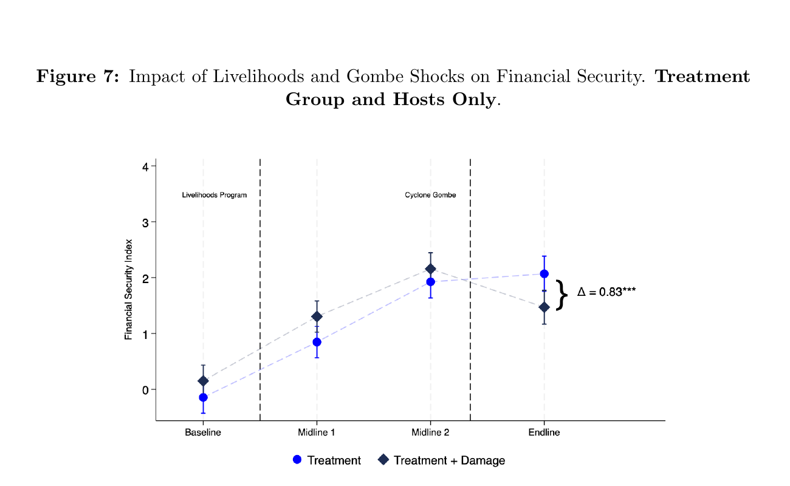
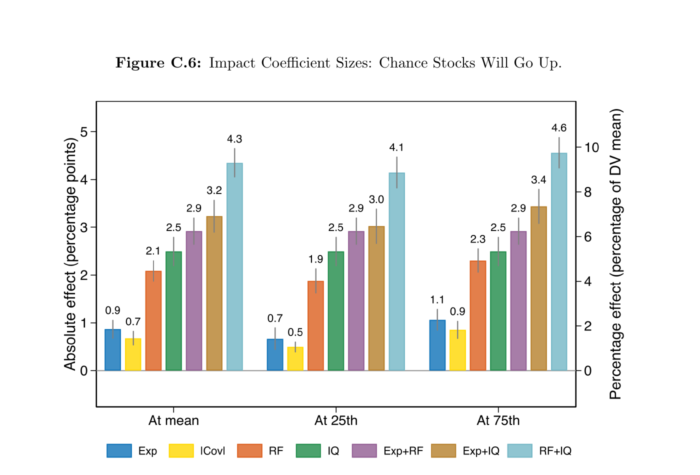
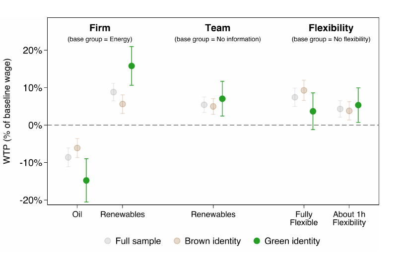
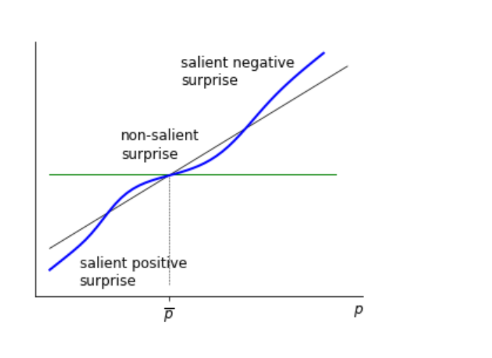
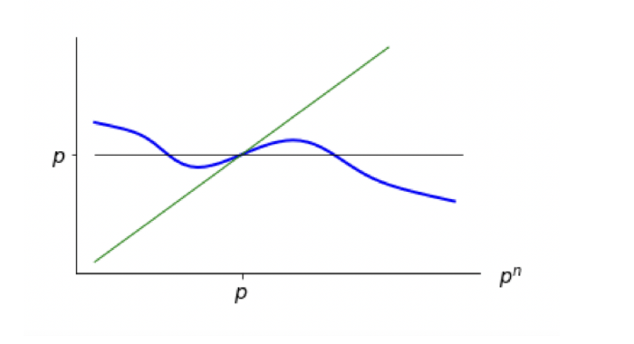
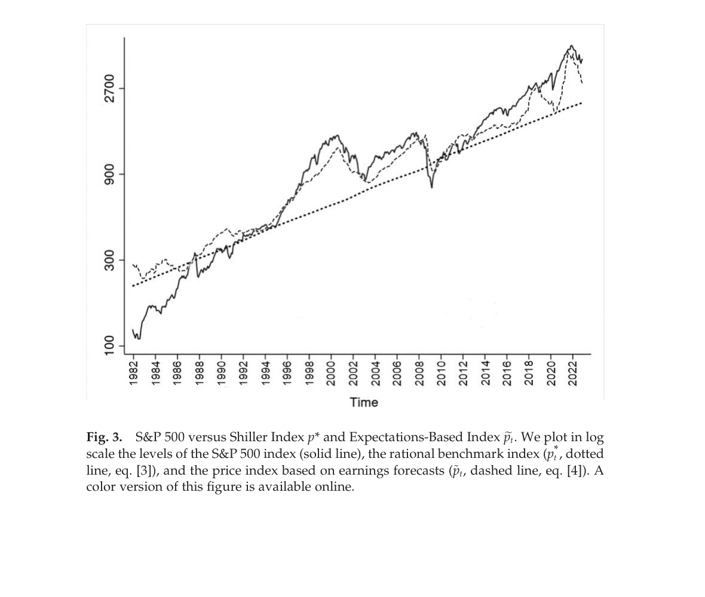

ECA3 Microeconomics II
Welcome! I'm a third-year MRes/PhD student in Economics at the London School of Economics, working on topics in behavioural and development economics. My research asks how psychological and social forces — memory, beliefs, and identity — shape the economic decisions people make, combining behavioural theory with field and survey experiments. Previously, I was a data scientist at BEWorks. I am affiliated with STICERD and the Altruistic Capital Lab.
Fields: Behavioural, Development, Political Economy
Financial Security, Climate Shocks, and Social Cohesion
Submitted
Presented at: Pacific Conference for Development Economics (PACDEV); Harvard Department of Economics; Harvard Business School; LSE Department of Economics
Abstract: Trust and willingness to share resources are not fixed social preferences—they respond to economic circumstances through a mechanism that shifts individuals between cooperative and zero-sum orientations. We provide evidence using two sequential shocks to financial security among ultra-poor refugees and host communities in Mozambique. A randomized livelihoods program increased financial security by 1.51 SD, raising social cohesion by 0.55 SD. A subsequent cyclone partially reversed these gains, reducing social cohesion by 0.30 SD. Both shocks generate similar implied elasticities between financial security and social cohesion, suggesting a stable structural relationship between the two. These findings indicate that economic inclusion programs can promote inter-group integration, but their effects remain vulnerable to the increasingly frequent economic shocks induced by climate change.

Funders and Partners: UNHCR
Recall Fluency: A Cognitive Source of Belief and Choice Heterogeneity
Working Paper
Presented at: Bayes Business School
Abstract: The US Health and Retirement Study collects data on participants' recall fluency (RF), their ability to recall words from a list, a standard measure of memory used by psychologists. Controlling for multiple demographic characteristics as well as IQ, people with a higher RF are more optimistic about stock returns, the price of their homes, and their life expectancy. We derive the predictions of a standard memory model and find that, consistent with them, the beliefs of higher RF people about each target domain are more sensitive to cues, to experiences in that domain, but also to irrelevant experiences in other domains, especially those similar to the target. These effects, in turn, carry to investment and retirement choices. RF emerges as an economically relevant personal trait.

The Cost of Identity: Theory and Experimental Evidence from the Energy Sector
Working Paper
Presented at: LSE Department of Economics
Abstract: How do private and social identities affect occupational choice? We study this question in the energy labor market, where oil and gas firms play a fundamental role in the green transition. We design a novel survey experiment and administer it to first-time job seekers. We find that individuals assign positive amenity value to working for a company whose core business aligns with their environmental identity and disamenity value to those that conflict with it. Respondents with green identities are willing to forgo 20% of their salary to work in a renewable energy firm rather than a generic energy company, and require a 15% wage premium to accept a job in an oil and gas firm. This pattern also holds when individuals apply to work in teams focusing on clean energy within these firms. To isolate social-image effects, we randomize whether job choices are private or publicly disclosed. Social image concerns significantly influence occupational choices, especially for jobs perceived as socially stigmatized. We develop a model of occupational choice in which individuals have private preferences over jobs and derive utility from aligning with social norms. In structural simulations, we study how the social environment shapes the allocation of talent, productivity, and the pace of the green transition.

Funders and Partners: LSE Global School of Sustainability (GSoS)
Price Norms and Consumer Behaviour
Working Paper
Presented at: Harvard Department of Economics
Abstract: We study how memory shapes consumer valuation of prices. When consumers evaluate a price, they compare it to a norm retrieved from past experience: a large discount is attractive partly because it contrasts with remembered higher prices, while a modest increase goes unnoticed if close to the norm. We bring this model to data using transaction records from a large UK retailer, exploiting exogenous variation in prices to identify the causal role of past price experience on current demand. We find that consumers' price sensitivity depends strongly on their personal price history, consistent with memory-based reference dependence.


Funders and Partners: A major UK grocery retailer
Long Term Expectations and Aggregate Fluctuations
NBER Macroeconomics Annual, 38(1):311–347, 2024
Abstract: We use analysts' long-term earnings growth (LTG) forecasts for S&P 500 firms to measure aggregate expectations and study their role in macro-financial fluctuations. LTG forecasts are excessively volatile and systematically disappointed: high LTG predicts both predictable forecast errors and low future stock returns, contradicting rationality. Holding required returns constant, an expectations-based price index built from LTG accounts for the bulk of post-1980 stock-market volatility and resolves Shiller's excess volatility puzzle. The same beliefs help explain financial and real co-movement: higher LTG predicts near-term increases and longer-horizon declines in interest rates, the reverse pattern for credit spreads, and investment booms that revert as optimism is disappointed. LTG also forecasts consumption, employment, and wages, with Granger causality running from expectations to the macroeconomy. Together, the evidence indicates that nonrational fluctuations in long-term beliefs are a quantitatively important driver of aggregate financial and real volatility.

Changing Narratives: AI-Assisted Reframing for NEET Youth
Pilot ongoing
Abstract: Working with the UK Department for Work and Pensions, we develop and test an AI tool that helps young people who are not in employment, education, or training (NEET) reframe their past experiences and rewrite the narrative around themselves as workers. The tool targets the framing gap that work coaches in Jobcentres frequently encounter — young people who cannot see how their past connects to a contribution they could make at work — alongside the more familiar skills gap.
Funders and Partners: UK Department for Work and Pensions
ECA3 Microeconomics II
EC1A1 Microeconomics I
EC200 Behavioural Economics